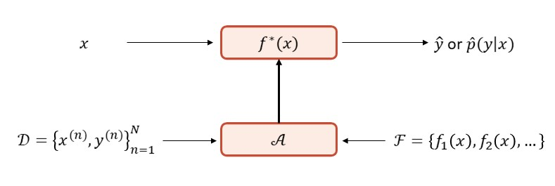
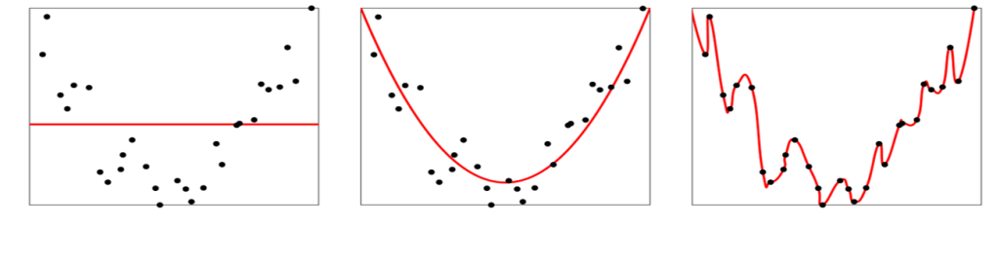
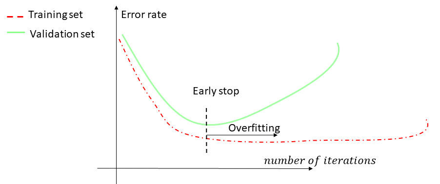
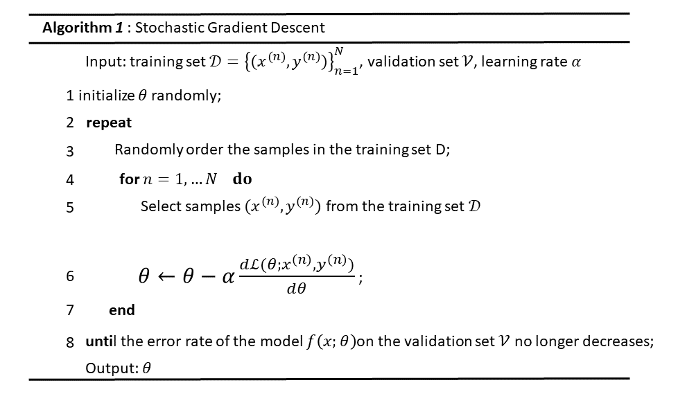
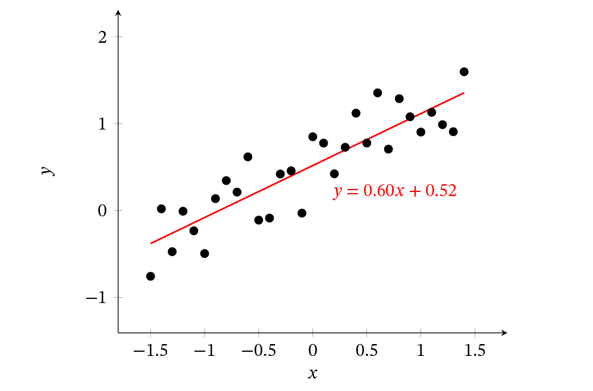
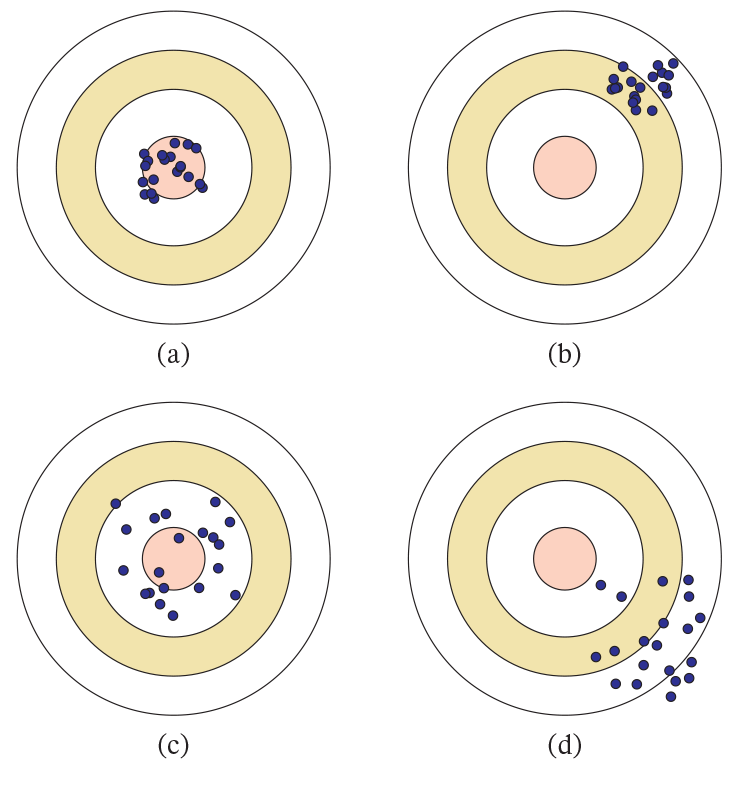
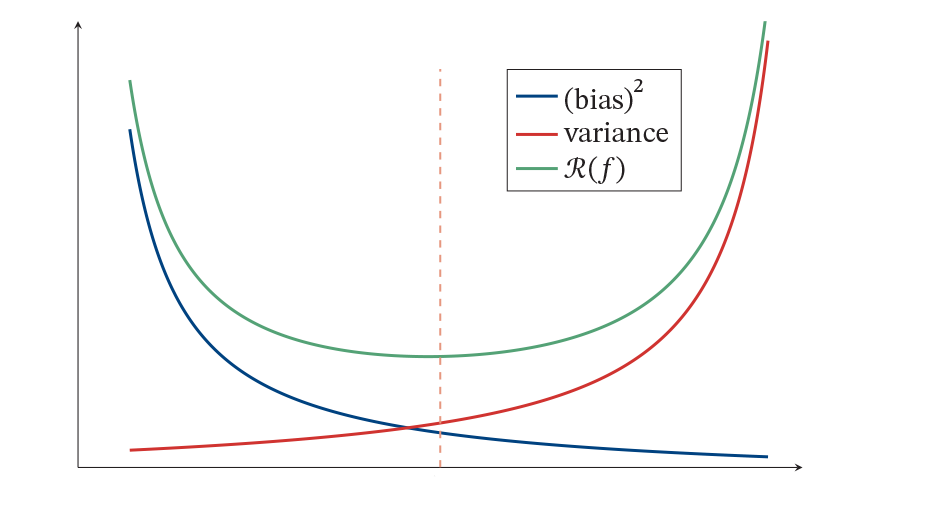
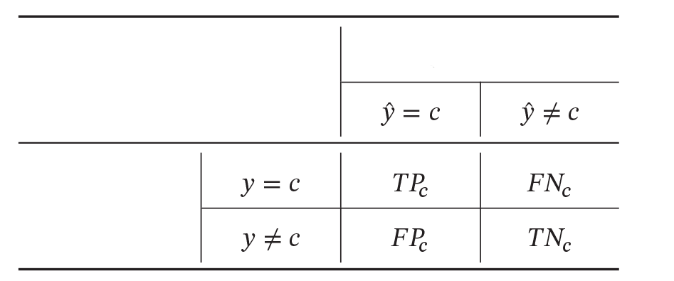

In layman’s terms, machine learning is to allow computers to learn automatically from data to obtain certain knowledge . As a discipline, machine learning usually refers to a type of problem and the method to solve this type of problem, that is, how to find the law from the observation data , and use the learned law to predict the unknown or unobservable data .
In the early engineering field, machine learning is often called pattern recognition, but pattern recognition is more biased towards specific application tasks, such as optical character recognition, speech recognition, and face recognition. The characteristic of these tasks is that for us humans, these tasks are easy to complete, but we do not know how we do them, so it is difficult to manually design a computer program to complete these tasks. A feasible method is to design an algorithm that allows the computer to learn the rules from the labeled samples and use it to complete various recognition tasks. With the increasing application of machine learning technology, the concept of machine learning is now gradually replacing pattern recognition, becoming the general term for this type of problem and its solutions.
Taking handwritten digit recognition as an example, we need to allow the computer to automatically recognize handwritten digits. Handwritten digit recognition is a classic machine learning task, which is simple for humans, but very difficult for computers. It is difficult for us to summarize the handwriting characteristics of each digit, or the rules for distinguishing different digits, so designing a set of recognition algorithms is an almost impossible task.
In real life, many problems are similar to those of handwritten number recognition, such as object recognition and speech recognition. For this kind of problem, we don’t know how to design a computer program to solve it. Even if it can be realized by some heuristic rules, the process is extremely complicated. Therefore, people began to try another way of thinking, that is, let the computer see a large number of samples, learn some experience from them, and then use these experiences to identify new samples. To recognize handwritten digits, first manually annotate a large number of handwritten digital images (that is, each image is manually marked with what number it is), these images are used as training data, and then a set of models are automatically generated through the learning algorithm, and rely on it. This method of learning through data is called the method of machine learning.
This chapter first introduces the basic concepts and basic elements of machine learning and describes in more detail a simple machine learning example-linear regression.
Table des matières
Basic Concepts
First, we use a life example to introduce some basic concepts in machine learning: samples, features, labels, models, learning algorithms, etc. Suppose we want to buy mangoes in the market, but we have no previous experience in selecting mangoes, how can we obtain this knowledge through learning?
First, we randomly select some mangoes from the market and list the characteristics of each mango. The characteristics can also be called attributes including color, size, shape, origin, brand, and the label we need to predict. The label can be a continuous value such as a comprehensive score on the sweetness, moisture, and ripeness of mangoes or a discrete value such as « good » and « bad » labels. Here, the label of each mango can be obtained by tasting it directly, or by inviting some experienced experts to mark it.
We can regard a mango with marked features and labels as a sample, which is often called an instance. A set of samples is called a data set. In many fields, data sets are often called Corpus. Generally, the data set is divided into two parts: a training set and a test set. The samples in the training set are used to train the model, also called training samples, and the samples in the test set are used to test the quality of the model, also called test samples.
We usually use a D-dimensional vector $x = [x_1, x_2,…, x_D]^T$ composed of all the features of a mango, called a feature vector, where each dimension represents a feature. The label of mango is usually represented by a scalar y.
Suppose the training set D consists of N samples, each of which is Identically and Independently Distributed (IID), that is, independently drawn from the same data distribution, denoted as
D=\{ (x^{(1)},y^{(1)}) ,(x^{(2)},y^{(2)}),...,(x^{(N)},y^{(N)})\}Given the training set D, we want to let the computer automatically find an optimal function from a set of functions $\mathcal{F}=\{ f_1(x),f_2(x),…\}$ to approximate the true mapping relationship between the feature vector x and the label y denoted $f^{*}(x)$, For a sample x, we can use the function $f^{*}(x)$ to predict the value of its label,
$$
\hat{y}={f}^*(x)
$$
Or label conditional probability
$$
\hat{p}(y\mid x)={f}_y^*(x)
$$
How to find this optimal function ${f}^*(x)$ is the key to machine learning, and it generally needs to be done through Learning Algorithm $\mathcal{A}$. In some literature, the learning algorithm is also called Learner. This search process is usually called the learning or training process.
In this way, the next time you buy a mango from the market, you can use the learned function ${f}^*(x)$ to predict the quality of the mango according to the characteristics of the mango. In order to evaluate the fairness, we still extract a group of mangoes independently and equally distributed as the test set ${D}’$ and test on all the mangoes in the test set to calculate the accuracy of the prediction results.
Acc(f^{*})(x)=\frac{1}{{D}'}\sum_{(x,y) \in {D}' } I({f}^*(x)=y)Where I(.) is the indicator function, and $ | {D}’ |$ is the size of the test set.
Figure 1 shows the basic process of machine learning. For a prediction task, the input feature vector is x, and the output label is y. We choose a function set $\mathcal{F}$ , and learn the function $f^{*}(x)$ from $\mathcal{F}$ through the learning algorithm $\mathcal{A}$ and a set of training samples D. In this way, for the new input x, the function $f^{*}(x)$ can be used to predict.

Three basic elements of machine learning
Machine learning is to learn general rules from limited observational data, and apply the summarized rules to unobserved samples. Machine learning methods can be roughly divided into three basic elements: models, learning criteria, and optimization algorithms.
Model
For a machine learning task, first, determine its input space $\mathcal{X}$ and output space $\mathcal{Y}$. The main difference between different machine learning tasks lies in the different output spaces. In the binary classification problem $\mathcal{Y}= \{+1, -1\}$ , in the C -classification problem $\mathcal{Y} = \{1, 2,…, C\}$, and in the regression problem $\mathcal{Y} = \mathbb{R}$.
The input space $\mathcal{X}$ and the output space $\mathcal{Y}$ form a sample space. For the samples in the sample space $(x,y)\in \mathcal{X} \times \mathcal{Y}$, it is assumed that the relationship between x and y can be determined by an unknown true mapping function y = g(x) or the true conditional probability distribution $p_r(y \mid x)$ . The goal of machine learning is to find a model that approximates the real mapping function g(x) or the true conditional probability distribution $p_r(y \mid x)$.
Since we don’t know the actual mapping function g(x) or the concrete form of the conditional probability distribution $p_r(y \mid x)$, we can only hypothesize a set of functions $\mathcal{F}$ based on experience, called Hypothesis Space, and then observe its characteristics on the training set D, select an ideal hypothesis ${f}^*(x) \in \mathcal{F} $
The hypothesis space $\mathcal{F}$ is usually a family of parameterized functions.
$$\mathcal{F}=\{ f(x;\theta) \mid \theta \in \mathbb{R}^D \}$$
Where $f(x;\theta) $ is a function with a parameter of $\theta$, also called a model, and D is the number of parameters.
Common hypothesis spaces can be divided into linear and nonlinear.
Linear model
The hypothesis space of the linear model is a family of parameterized linear functions, namely
$$f(x;\theta)=w^Tx+b$$
The parameter $\theta$ includes the weight vector w and the bias b.
Non-linear model
A generalized nonlinear model can be written as a linear combination of multiple nonlinear basis functions $\phi(x)$ :
$$f(x;\theta)=w^T\phi(x)+b$$
Where $\phi(x)=[\phi_1(x),\phi_2(x),...,\phi_K(x) ]^T$ is a vector composed of K nonlinear basis functions, and the parameter $\theta$ contains the weight vector w and the bias b.
If $\phi(x)$ itself is a learnable basis function, such as
$$\phi_k(x)=h(w^T_k {\phi}'(x)+b_k),\forall 1\leq k\leq K$$
where $h(⋅$) is a nonlinear function,${\phi}'(x)$ is another set of basis functions, and $w_k$ and $b_k$ are learnable parameters, then $f(x;\theta)$ is equivalent to the neural network model.
Learning Criteria
Let the training set $\mathcal{D}=\{ \{ x^{(n)},y^{(n)} \}_{n=1}^{N} \}$ is composed of N Identically and Independently Distributed (IID) samples, that is, each sample $(x,y)\in \mathcal{X} \times \mathcal{Y}$ is independently randomly generated from the joint space of $\mathcal{X} $ and $\mathcal{Y} $ according to an unknown distribution $p_r(y\mid x)$. Here it is required that the sample distribution $p_r(y\mid x)$ must be fixed and will not change over time. If $p_r(y\mid x)$ itself is variable, it is impossible to learn from these data.
A good model $f(x;\theta^{*})$ should be consistent with the real mapping function $y=g(x)$ in all possible values of (x,y), that is
| f(x,{\theta}^*)-y | <\epsilon , \qquad \forall (x,y) \in \mathcal{X } \times \mathcal{Y }
Or consistent with the true conditional probability distribution $p_r(y\mid x)$, that is
| f_y(x,{\theta}^*)-p_r(y\mid x) | <\epsilon , \qquad \forall (x,y) \in \mathcal{X } \times \mathcal{Y } Among them, $\epsilon$ is a small positive number, and $f_y(x;\theta^{*})$ is the probability corresponding to y in the conditional probability distribution predicted by the model.
The quality of the model $f(x;\theta)$ can be measured by Expected Risk $\mathcal{R}(\theta)$, which is defined as
$$
\mathcal{R}(\theta)=\mathbb{E}_{(x,y) \sim p_r(y\mid x)} [ \mathcal{L}(y,f(x;\theta)) ]
$$
where $p_r(y\mid x)$ is the real data distribution, and $\mathcal{L}(y,f(x;\theta))$ the loss function, used to quantify the difference between the two variables.
Loss function
The loss function is a non-negative real number function used to quantify the difference between the model prediction and the real label. Several commonly used loss functions are introduced below.
0-1 Loss Function : The most intuitive loss function is the error rate of the model on the training set, that is, the 0-1 loss function :
\mathcal{L}(y,f(x;\theta)) =\left\{\begin{matrix}
0 & \text{if} \quad y=f(x;\theta) \\
1& \text{if} \quad y \neq f(x;\theta)
\end{matrix}\right. Although the 0-1 loss function can objectively evaluate the quality of the model, its disadvantage is that the mathematical properties are not very good: it is not continuous and the derivative is 0, which is difficult to optimize. Therefore, a continuously differentiable loss function is often used instead.
Quadratic Loss Function: The Quadratic Loss Function is often used in the task of predicting that the label y is a real value, defined as
$$
\mathcal{L}(y,f(x;\theta))=\frac{1}{2}(y-f(x;\theta))^2
$$
The square loss function is generally not suitable for classification problems.
Cross-Entropy Loss Function : The Cross-Entropy Loss Function is generally used for classification problems. Assuming that the label of the sample $y \in \{1,...,C\}$ is a discrete category, the output of the model $f(x;\theta) \in [0, 1]^C $ is the conditional probability distribution of the category label, namely
$$
p(y=c\mid x;\theta )=f_c(x;\theta)
$$
And meet
$$
f_c(x;\theta) \in [0, 1], \quad \sum_{c=1}^{C} f_c(x;\theta)=1
$$
We can use a C-dimensional one-hot vector y to represent the sample label. Assuming that the label of the sample is k, then the label vector y only has the value of the k dimension 1, and the values of the other elements are all 0. The label vector y can be regarded as the true conditional probability distribution $p_r(y\mid x)$ of the sample label, that is, the c dimension is the true conditional probability of the category k Assuming that the class of the sample is c, then the probability of it belonging to the k class is 1, and the probability of belonging to other classes is 0.
For two probability distributions, cross-entropy can generally be used to measure their difference. For the true distribution of labels, the cross entropy between y and the model prediction distribution $f(x;\theta)$ is
\mathcal{L}(y,f(x;\theta))=-y^T log(f;\theta) = -\sum_{c=1}^{C}y_c logf_c(x;\theta)For example, for the three classification problem, the label vector of a sample is $y = [0, 0, 1]^T$, and the label distribution predicted by the model is $f(x;\theta) = [0.3, 0.3, 0.4]^T$, then their cross-entropy It is $-(0 \times log(0.3) + 0 \times log(0.3) + 1 \times log(0.4)) = – log(0.4)$.
Because y is a one-hot vector, it can also be written as
$$
\mathcal{L}(y,f(x;\theta))=-logf_y(x;\theta)
$$
Among them, $f_y(x;\theta)$ can be regarded as the likelihood function of the real category y. Therefore, the cross-entropy loss function is also the negative log-likelihood function.
Hinge loss function : For the binary classification problem, suppose the value of y is $\{-1, +1\},f(x;\theta) \in \mathbb{R}$. Hinge Loss Function is
\mathcal{L}(y,f(x;\theta))=max(0,1-yf(x;\theta)) \
\overset{\Delta}{=} [ 1-yf(x;\theta) ]_+
where $[x]+=max(0,x)$ .
Risk Minimization Guidelines
A good model $f(x;\theta)$ should have a relatively small expected error, but because the real data distribution and mapping function are not known, the expected risk cannot actually be calculated $\mathcal{R}(\theta)$ .Given a training set $\mathcal{D}= { { ( x^{(n)}, y^{(n)} }{n=1}^{N} }$, what we can calculate is Empirical Risk, which is the average loss on the training set:
\mathcal{R}_{\mathcal{D}}^{emp}(\theta)=\frac{1}{N}\sum{n=1}^{N}\mathcal{L}(y^{(n)},f(x^{(n)};\theta))Therefore, a practical learning criterion is to find a set of parameters $\theta^*$ to minimize the empirical risk, namely
\theta^*= argmin_\theta \mathcal{R}_{\mathcal{D}}^{emp}(\theta)
This is the Empirical Risk Minimization (ERM) criterion.
According to the law of large numbers, when the training set size $\mid \mathcal{D} \mid$ tends to infinity, the empirical risk tends to the expected risk. However, under normal circumstances, we cannot obtain unlimited training samples, and the training samples are often a small subset of the real data or contain a certain amount of noise data, which cannot well reflect the true distribution of all the data. The principle of empirical risk minimization can easily lead to a low error rate of the model on the training set, but a high error rate on the unknown data. This is called overfitting.
Overfitting
Over-fitting problems are often caused by the lack of training data, noise, and strong model capabilities. In order to solve the problem of over-fitting, regularization of parameters is generally introduced on the basis of minimizing the empirical risk to limit the model ability, so that it does not excessively minimize the empirical risk. This criterion is the Structure Risk Minimization (SRM) criterion:
\theta^* = argmin_\theta \mathcal{R}_{\mathcal{D}}^{struct}(\theta) =\argmin_\theta \mathcal{R}_{\mathcal{D}}^{emp}(\theta)+\frac{1}{2}\lambda | \theta |=argmin_\theta \frac{1}{N}\sum_{n=1}^{N}\mathcal{L}(y^{(n)};f(x^{(n)};\theta))+\frac{1}{2}\lambda | \theta |Among them, $ | \theta |$ is the regularization term of the $\ell_2$ norm, which is used to reduce the parameter space and avoid overfitting; $\lambda$ is used to control the intensity of regularization.
The regularization term can also use other functions, such as $\ell_1$ norm. The introduction of $\ell_1$ norm usually makes the parameters have a certain sparseness, so it is often used in many algorithms. From the perspective of Bayesian learning, regularization introduces the prior distribution of parameters so that it does not completely depend on the training data.
The opposite concept of overfitting is underfitting, that is, the model cannot fit the training data well, and the error rate on the training set is relatively high. Under-fitting is generally caused by insufficient model capabilities. Figure 2 shows examples of underfitting and overfitting.

In short, the learning criterion in machine learning is not only to fit the data on the training set, but also to minimize the generalization error. Given a training set, the goal of machine learning is to find an « ideal » model with low generalization error from the hypothesis space, in order to better predict unknown samples, especially samples that do not appear in the training set. Therefore, we can regard machine learning as a generalization problem that obtains more general rules from limited, high-dimensional, and noisy data.
Optimization
After determining the training set $\mathcal{D}$, the hypothesis space $\mathcal{F}$ and the learning criteria, how to find the optimal model $f(x;\theta^*)$ becomes an optimization problem. The training process of machine learning is actually the process of solving optimization problems.
optimization can be divided into parameter optimization and hyperparameter optimization. The $\theta$ in the model $f(x;\theta)$ is called the parameters of the model, which can be learned through optimization algorithms. In addition to the learnable parameters $\theta$, there is another type of parameter used to define the model structure or optimization strategy. This type of parameter is called Hyper-Parameter.
Common hyperparameters include the number of categories in the clustering algorithm, the step size in the gradient descent method, the coefficient of the regularization term, the number of layers of the neural network, and the kernel function in the support vector machine. The selection of hyperparameters is generally a combinatorial optimization problem, and it is difficult to learn automatically through optimization algorithms. Therefore, hyperparameter optimization is a highly empirical technique of machine learning. It is usually set according to human experience, or a set of hyperparameter combinations is continuously adjusted by trial and error through search methods.
Gradient descent
In order to make full use of some efficient and mature optimization methods in convex optimization, such as conjugate gradient, quasi-Newton method, etc., many machine learning methods tend to choose appropriate models and loss functions and construct a convex function as the optimization objective. But there are also many models (such as neural networks) whose optimization goals are non-convex, and they can only step back and find the local optimal solution.
In machine learning, the simplest and most commonly used optimization algorithm is the gradient descent method, that is, first initialize the parameter $\theta_0$, and then calculate the minimum value of the risk function on the training set $\mathcal{D}$ according to the following iterative formula:
\theta_{t+1}=\theta_t-\alpha \frac{\partial \mathcal{R}{\mathcal{D}}(\theta)}{\partial \theta} =\theta_t-\alpha \frac{1}{N}\sum{n=1}^{N}\frac{\partial \mathcal{L}(y^{(n)},f(x^{(n)};\theta))}{\partial \theta}
Among them, $\theta_t$ is the parameter value in the t iteration, and $\alpha$ is the search step. In machine learning, $\alpha$ is generally called Learning Rate.
Stop early
In addition to the regularization term, the optimization algorithm for gradient descent can also prevent overfitting by stopping early.
In the process of gradient descent training, due to overfitting, the parameters that converge on the training sample are not necessarily optimal on the test set. Therefore, in addition to the training set and the test set, a validation set is sometimes used for model selection to test whether the model is optimal on the validation set. In each iteration, test the newly obtained model $f(x;\theta)$ on the validation set and calculate the error rate. If the error rate on the validation set no longer decreases, stop the iteration. This strategy is called Early Stop. If there is no validation set, a small subset of the training set can be divided into the validation set. Figure 3 shows an example of early stopping.

Stochastic gradient descent
In the gradient descent method , the objective function is the risk function on the entire training set. This method is called Batch Gradient Descent (BGD). The batch gradient descent method needs to calculate and sum the gradient of the loss function on each sample in each iteration. When the number of samples in the training set N is large, the space complexity is relatively high, and the computational overhead of each iteration is also high.
In machine learning, we assume that each sample is randomly extracted from the real data distribution independently and identically, and the real optimization goal is to minimize the expected risk. The batch gradient descent method is equivalent to collecting N samples from the real data distribution and approximating the expected risk gradient from the gradient of the empirical risk calculated by them. In order to reduce the computational complexity of each iteration, we can also collect only one sample in each iteration, calculate the gradient of the sample loss function and update the parameters, that is, Stochastic Gradient Descent (SGD). After a sufficient number of iterations, stochastic gradient descent can also converge to a locally optimal solution [Nemirovski et al., 2009].
The training process of the stochastic gradient descent method is shown in Algorithm 1.

The difference between batch gradient descent and stochastic gradient descent is that the optimization goal of each iteration is the average loss function for all samples or the loss function for a single sample. Because stochastic gradient descent is simple to implement and has a very fast convergence rate, it is widely used. Stochastic gradient descent is equivalent to introducing random noise on the gradient of batch gradient descent. In non-convex optimization problems, stochastic gradient descent is easier to escape from the local optimum.
Mini-batch gradient descent
One disadvantage of the stochastic gradient descent method is that it cannot make full use of the parallel computing power of the computer. Mini-Batch Gradient Descent is a compromise between batch gradient descent and stochastic gradient descent. In each iteration, we randomly select a small part of the training samples to calculate the gradient and update the parameters, which can take into account the advantages of the stochastic gradient descent method and improve the training efficiency.
In the t iteration, randomly select a subset $\mathcal{S}_t$ containing K samples, calculate and average the gradient of the loss function of each sample on this subset, and then update the parameters:
\theta_{t+1}\leftarrow \theta_{t}-\alpha \frac{1}{K}\sum_{(x,y)\in \mathcal{S}_t}\frac{\partial \mathcal{L}(y,f(x,\theta))}{\partial \theta}In practical applications, the small batch stochastic gradient descent method has the advantages of fast convergence and low computational cost, so it has gradually become the main optimization algorithm in large-scale machine learning [Bottou, 2010].
A simple example of machine learning-linear regression
In this section, we use a simple model (linear regression) to specifically understand the general process of machine learning, as well as different learning criteria: empirical risk minimization, structural risk minimization, maximum likelihood estimation, and maximum a posteriori estimation).
Linear regression is the most basic and widely used model in machine learning and statistics. It is a regression analysis that models the relationship between independent variables and dependent variables. When the number of independent variables is 1, it is called simple regression, and when the number of independent variables is greater than 1, it is called multiple regression.
From the perspective of machine learning, the independent variable is the feature vector of the sample $x \in \mathbb{R}^D$, and the dependent variable is the label y, where $y \in \mathbb{R}$ is a continuous value. Assume that space is a set of parameterized linear functions.
f(x;W,b)=W^Tx+b
The weight vector $w \in \mathbb{R}^D$ and bias $b \in \mathbb{R}$ are all learnable parameters, and the function $f(x;W,b) \in \mathbb{R}$ is also called a linear model.
For simplicity, we write the formula as
f(x,\hat{w})=\hat{w}^Tx
Among them, $\hat{w}$ and $\hat{b}$ are called augmented weight vector and augmented feature vector respectively:
\hat{x}=x\oplus 1\overset{\Delta}{=}\begin{bmatrix}
x\
1
\end{bmatrix}=\begin{bmatrix}
x_1\
\vdots\
x_D\
1
\end{bmatrix}\hat{w}=w\oplus b\overset{\Delta}{=}\begin{bmatrix}
w\
b
\end{bmatrix}=\begin{bmatrix}
w_1\
\vdots\
w_D\
b
\end{bmatrix}Where $\oplus$ is defined as the splicing operation of two vectors.
Without loss of generality, in the description later in this chapter, we adopt a simplified representation method, directly using w and x to represent the augmented weight vector and augmented feature vector, respectively. In this way, the linear regression model is abbreviated as $f(x;w)=w^Tx$
Parameter learning
Given a training set containing N training samples $\mathcal{P}=\{\{x^{(n)},y^{(n)}\}\}_{n=1}^{N}$ , we hope to learn an optimal linear regression model paramete w .
We introduce four different parameter estimation methods: empirical risk minimization, structural risk minimization, maximum likelihood estimation, and maximum a posteriori estimation.
Minimize experience risk
Since the labels of linear regression and the model output are continuous real values, the square loss function is very suitable to measure the difference between the real label and the predicted label.
According to the empirical risk minimization criterion, the empirical risk on the training set $\mathcal{D}$ is defined as
\mathcal{R}=\sum_{n=1}^{N}\mathcal{L}(y^{(n)},f(x^{(n)},w))=\frac{1}{2}\sum_{n=1}^{N}(y^{(n)}- w^T x^{(n)})^2\frac{1}{2} |y- X^T w |^2
Where $y = [y^{(1)},…,y^{(N)}]^T \in \mathbb{R}^N$ is the column vector composed of the true labels of all samples, and $X \in \mathbb{R}^{(D+1) \times N}$ is the input feature of all samples $x^{(1)},...,x^{(N)}$ The matrix composed of:
$$
X=\begin{bmatrix}
x_{1}^{(1)} & x_{1}^{(2)} & ... & x_{1}^{(N)} \
\vdots & \vdots& \ddots & \vdots\
x_{1}^{(1)} & x_{1}^{(2)} & ... & x_{1}^{(N)} \
1&1 & ... & 1
\end{bmatrix}
$$
The hazard function $\mathcal{R}(w)$is a convex function about w, and its partial derivative with respect to w is
\frac{\partial \mathcal{R}(w)}{\partial w} =\frac{1}{2}\frac{| y-X^Tw |}{\partial w}=-X(y-X^Tw)
Let $\frac{\partial \mathcal{R}(w) }{\partial w}=0$ get the optimal parameter $w^*$ as
w^*=(XX^T)^{-1}Xy=(\sum_{n=1}^{N} x^{(n)}(x^{(n)})^T)^{-1}(\sum_{n=1}^{N} x^{(n)}y^{(n)})
This method of solving linear regression parameters is also called Least Square Method (LSM). Figure 3 shows an example of using the least squares method to learn linear regression parameters.

In the least square method, $XX^T \in \mathbb{R}^{(D+1)\times (D+1)}$ must have an inverse matrix, that is, $XX^T$ is full rank (rank ($XX^T$)=D+1). In other words, the row vectors in N are linearly uncorrelated, that is, each feature is uncorrelated with other features. A common irreversibility of $XX^T$ is that the number of samples N is smaller than the number of features (D + 1), and the rank of $XX^t$ is N. At this time, there will be many solutions $w^*$, which can make $\mathcal{R}(w^*)=0$ .
When $XX^T$ is irreversible, the following two methods can be used to estimate the parameters: 1) Use principal component analysis and other methods to preprocess the data to eliminate the correlation between different features, and then use the least square method to estimate the parameters; 2 ) Use the gradient descent method to estimate the parameters. First initialize $w=0$, and then iterate through the following formula:
w\leftarrow w +\alpha X(y-X^Tw)
Where $\alpha$ is the learning rate. This method of using the gradient descent method to solve is also called the Least Mean Squares (LMS) algorithm.
Minimize structural risk
The basic requirement of the least squares method is that each feature must be independent of the others to ensure that $XX^T$ is reversible. But even if $XX^T$ is reversible, if there is large multicollinearity between the features, it will also make the inverse of $XX^T$ unable to be accurately calculated numerically. Some small disturbances on the data set X will cause a big change in $(XX^T)^{-1}$, which makes the calculation of the least square method very unstable. In order to solve this problem, [Hoerl et al., 1970] proposed Ridge Regression, which adds a constant to the diagonal elements of $XX^T$ so that $(XX^T+\lambda I)$ is full rank, that is, its determinant Not 0. The optimal parameter $w^*$ is
w^*=(XX^T+\lambda I)^{-1} XyWhere $\lambda > 0 $ is the pre-set hyperparameter, and I is the identity matrix.
The solution of ridge regression $w^*$ can be regarded as the least square estimation under the structural risk minimization criterion, and its objective function can be written as
$$
\mathcal{R}(w)=\frac{1}{2} | y-X^Tw |^2+\frac{1}{2}\lambda |w | ^2
$$
Where $\lambda > 0$ is the regularization coefficient.
Maximum likelihood estimation
Machine learning tasks can be divided into two categories: one is the unknown functional relationship between the sample feature vector x and the label y= ℎ(x), and the other is the conditional probability $p(y \mid x)$ obeys some unknown distributed. The least squares method belongs to the first category and directly models the functional relationship between x and the label y. In addition, linear regression can also estimate parameters from the perspective of modeling conditional probability $p(y \mid x)$.
Suppose the label y is a random variable, and it is determined by the function $f(x;w)=w^Tx$ plus a random noise $\epsilon$, namely
y=f(x;w)+\epsilon
=w^Tx+\epsilon
Among them, $\epsilon$ obeys a Gaussian distribution with a mean of 0 and a variance of $\sigma^2$. In this way, y obeys a Gaussian distribution with mean $w^Tx$ and variance $\sigma^2$:
p(y\mid x;w,\sigma)=\mathcal{N}(y;w^Tx,\sigma^2)=\frac{1}{\sqrt{2 \pi \sigma}}exp(-\frac{(y-w^Tx)^2}{2 \sigma^2})
The likelihood function (Likelihood) of the parameter w on the training set $ \mathcal{D}$ is
p(y\mid X;w, \sigma)=\prod_{n=1}^{N}p(y^{(n)} \mid x^{(n)};w,\sigma)=\prod_{n=1}^{N}\mathcal{N}(y^{(n)} ;w^T x^{(n)},\sigma^2)Where $y=[y^{(1)},...,y^{(N)}]$ is the vector composed of all sample labels, $X=[x^{(1)},...,x^{(N)}]$ is the matrix composed of all sample feature vectors.
log p(y\mid X;w,\sigma)=\sum_{n=1}^{N}log\mathcal{N}(y^{(n)};w^Tx^{(n)},\sigma^2)Maximum Likelihood Estimation (MLE) refers to finding a set of parameters w to make the likelihood function $p(y \mid X;w,\sigma)$ the largest, which is equivalent to the log likelihood function $log p(y \mid X;w,\sigma)$ max.
Let $\frac{\partial log p(y \mid X;w,\sigma)}{\partial w}=0$, get
w^{ML}=(XX^T)^{-1}Xy
It can be seen that the solution of the maximum likelihood estimation is the same as the solution of the least square method.
Maximum a posteriori estimate
One disadvantage of maximum likelihood estimation is that overfitting occurs when the training data is relatively small, and the estimated parameters may be inaccurate. In order to avoid overfitting, we can add some prior knowledge to the parameters.
Suppose the parameter w is a random vector and obeys a prior distribution $p(w;v)$. For simplicity, generally, let $p(w;v)$ be an isotropic Gaussian distribution:
p(w;v)=\mathcal{N}(w;0,v^2I)Where $v^2$ is the variance in each dimension.
According to the Bayesian formula, the posterior distribution of the parameter w (Posterior Distribution) is
p(w\mid X,y;v,\sigma)=\frac{p(w,y\mid X;v,\sigma)}{\sum_w p(w,y\mid X;v,\sigma)}\propto p(y \mid X,w;\sigma)p(w;v)
Where $ p(y \mid X,w;\sigma)$ is the likelihood function of w, and $p(w;v)$ is the prior of w.
This method of estimating the posterior probability distribution of the parameter w is called Bayesian Estimation, which is a statistical inference problem. Linear regression using Bayesian estimation is also called Bayesian Linear Regression (Bayesian Linear Regression).
Bayesian estimation is an interval estimation of parameters, that is, the distribution of parameters in an interval. If we want to get an optimal parameter value (ie point estimate), we can use the maximum posterior estimate. Maximum A Posteriori Estimation (MAP) means that the optimal parameter is the posterior distribution $ p(w \mid X,y;v,\sigma)$ The parameter with the highest probability density:
w^{MAP}= argmax_w p(y \mid X,w;\sigma)p(w;v)Let the likelihood function $p(y \mid X,w;\sigma)$ be the Gaussian density function , then the logarithm of the posterior distribution $p(w \mid X,y;v,\sigma)$ is
logp(w \mid X,y;v,\sigma) \propto logp(y\mid X,w;\sigma)+logp(w;v)
\propto -\frac{1}{2 \sigma^2}\sum_{n=1}^{N}(y^{(n)}-w^Tx^{(n)})^2 -\frac{1}{2v^2}w^Tw= -\frac{1}{2 \sigma^2}| y-X^Tw |^2 -\frac{1}{2v^2}w^Tw
It can be seen that the maximum posterior probability is equivalent to the structural risk minimization of the square loss, where the regularization coefficient $\lambda=\frac{\sigma^2}{v^2}$.
The maximum likelihood estimation and Bayesian estimation can be regarded as different interpretations of the parameters that need to be estimated by the frequency school and the Bayesian school, respectively. When $v \rightarrow \infty$, the prior distribution $p(w;v)$ degenerates to a uniform distribution, which is called Non-Informative Prior, and the maximum posterior estimation degenerates to the maximum likelihood estimation.
Deviation-variance decomposition
In order to avoid overfitting, we often make a trade-off between the fitting ability and complexity of the model. A model with a strong fitting ability will generally have higher complexity and easily lead to overfitting. On the contrary, if the complexity of the model is limited and its fitting ability is reduced, it may lead to underfitting. Therefore, how to achieve a good balance between the model’s fitting ability and complexity is very important for a machine learning algorithm. Bias-Variance Decomposition provides us with a good analysis and guidance tool.
Taking the regression problem as an example, suppose the true distribution of the sample is $p_r(x,y)$, and the square loss function is used. The expected error of the model f(x) is
\mathcal{R}(f)=\mathbb{E}{(x,y) \sim p_r(x,y)} [ (y-f(x))^2 ]
Then the optimal model is
f^*(x)=\mathbb{E}{y \sim p_r(y\mid x)} [ y]Where $ p_r(y\mid x)$ is the true conditional distribution of the sample,$f^(x)$ is the optimal model using square loss as the optimization objective, and its loss is
\epsilon=\mathbb{E}_{(x,y) \sim p_r(x,y)} [ (y-f^(x))^2 ]
Loss $\epsilon$ is usually caused by sample distribution and noise, and cannot be reduced by optimizing the model.
It is expected that the error can be decomposed into
\mathcal{R}(f)=\mathbb{E}_{(x,y) \sim p_r(x,y)} [ (y-f^*(x)+f^*(x)-f(x))^2 ]=\mathbb{E}_{x\sim p_r(x)}[ (f(x)-f^*(x))^2 ]+\epsilon
The first item is the gap between the current model and the optimal model, which is the real goal that the machine learning algorithm can optimize.
When actually training a model f(x), the training set $\mathcal{D}$ is a finite sample set sampled independently and identically from the real distribution $p_r(x,y)$. Different training sets will get different models. Let $f_D(x)$ denote the model learned on the training set $\mathcal{D}$. The ability of a machine learning algorithm (including models and optimization algorithms) can be evaluated by the average performance of models on different training sets.
For a single sample x, the expected difference between the model $f_D(x)$ and the optimal model $f^*(x)$ in different training sets $\mathcal{D}$ is
\mathbb{E}_{D} [ (f_D(x)-f^(x))^2 ]=\mathbb{E}_{D} [ (f_D(x)-\mathbb{E}_D [ f_D(x) ]+\mathbb{E}_D [ f_D(x) ]-f^*(x))^2 ]=\underbrace{(\mathbb{E}_D [ f_D(x) ]-f^*(x))^2}_{\text{(bias.x)}^2}+\underbrace{\mathbb{E}_D [ (f_D(x)-\mathbb{E}_D [ f_D(x) ])^2 ]}_{\text{(variance.x)}}
The first term is Bias, which refers to the difference between the average performance of a model on different training sets and the optimal model, which can be used to measure the fitting ability of a model. The second term is variance, which refers to the difference of a model on different training sets, which can be used to measure whether a model is prone to overfitting.
Use $\mathbb{E}_{D} [ (f_D(x)-f^*(x))^2 ]$ in formula instead of $(f_D(x)-f^*(x))^2$, the expected error can be further written as
\mathcal{R}(f)=\mathbb{E}_{x\sim p_r(x)}[ \mathbb{E}_{D} [ (f_D(x)-f^*(x))^2 ]]+\epsilon=\text{bias}^2+\text{variance}+\epsilonwhere,
\text{bias}^2=\mathbb{E}_x [ (\mathbb{E}_D[f_D(x)]-f^*(x))^2]and
\text{variance}=\mathbb{E}_x[ \mathbb{E}_D [(f_D(x)-\mathbb{E}_D [ f_D(x) ])^2 ] ]Minimizing the expected error is equivalent to minimizing the sum of deviation and variance.
Figure 4 shows the four combinations of deviations and variances of the machine learning model. The center point of each graph is the optimal model $f^*(x)$, and the blue dot is the model $f_D(x)$ obtained on different training sets D. Figure 4a shows an ideal situation with low variance and bias. Figure 4b shows the case of high deviation and low variance, indicating that the generalization ability of the model is very good, but the fitting ability is insufficient. Figure 4c shows the case of low deviation and high variance, indicating that the model’s fitting ability is very good, but its generalization ability is relatively poor. When the training data is relatively small, it will lead to overfitting. Figure 4d shows the case of high deviation and high variance, which is the worst case.

The variance generally decreases with the increase of training samples. When there are a large number of samples, the variance is relatively small. At this time, a strong model can be selected to reduce the deviation. However, in many machine learning tasks, the training set is often limited, and the optimal deviation and the optimal variance cannot be taken into account.
As the complexity of the model increases, the fitting ability of the model becomes stronger, the deviation decreases, and the variance increases, which leads to overfitting. Taking structural risk minimization as an example, we can adjust the regularization coefficient $\lambda$ to control the complexity of the model. When $\lambda$ becomes larger, the complexity of the model will decrease, which can effectively reduce the variance and avoid overfitting, but the deviation will increase. When $\lambda$ is too large, the total expected error will increase instead. Therefore, a good regularization coefficient $\lambda$ needs to strike a better balance between deviation and variance. Figure 5 shows the expected error, deviation, and variance of the machine learning model with complexity. The red dotted line indicates the optimal model. The optimal model is not necessarily the intersection of the deviation curve and the variance curve.

The decomposition of deviation and variance provides a way to analyze the machine learning model, but it is difficult to measure directly in actual operation. Generally speaking, when the error rate of a model on the training set is relatively high, it indicates that the fitting ability of the model is not enough and the deviation is relatively high. This situation can be improved by adding data features, increasing model complexity, and reducing regularization coefficients. When the error rate of the model on the training set is relatively low, but the error rate on the validation set is relatively high, it indicates that the model is over-fitting and the variance is relatively high. This situation can be alleviated by reducing the complexity of the model, increasing the regularization coefficient, and introducing a priori. In addition, there is an effective method to reduce variance is the ensemble model, which is to reduce the variance by averaging multiple high variance models.
Evaluation index
In order to measure the quality of a machine learning model, a test set needs to be given, the model is used to predict each sample in the test set, and the evaluation score is calculated based on the prediction result.
For classification problems, common evaluation criteria include accuracy, precision, recall, and F-value. Given the test set $\mathcal{T}={(x^{(1)},y^{(1)}),...,(x^{(N)},y^{(N)})}$, assuming the label $y^{(n)}\in {1,...,C}$, use The learned model $f(x;\theta^*)$ predicts each sample in the test set, and the result is ${\hat{y}^{(1)},...,\hat{y}^{(N)} }$. Accuracy The most commonly used evaluation index is Accuracy:
\mathcal{A}=\frac{1}{N}\sum_{n=1}^{N}I(y^{(n)} =\hat{y}^{(n)})
Where I(⋅) is the indicator function.
Error rate and accuracy rate correspond to the error rate:
\mathcal{E} =1-\mathcal{A}= \frac{1}{N}\sum_{n=1}^{N}I(y^{(n)} =\hat{y}^{(n)})
Precision rate and recall rate The accuracy rate is the average of the overall performance of all categories. If you want to estimate the performance of each category, you need to calculate the precision and recall rates. Precision and recall are two metrics that are widely used in the fields of information retrieval and statistical classification, and they are also widely used in the evaluation of machine learning.
For the category c, the results of the model on the test set can be divided into the following four situations:
- True Positive (TP): The true category of a sample is c and the model correctly predicts the category c. The number of such samples is recorded as
TP_c=\sum_{n=1}^{N}I(y^{(n)} =\hat{y}^{(n)}=c)- False Negative (FN): The true category of a sample is c, and the model incorrectly predicts other categories. The number of such samples is recorded as
FN_c=\sum_{n=1}^{N}I(y^{(n)}=c \wedge \hat{y}^{(n)} \neq c)- False Positive (FP): The true category of a sample is another category, and the model incorrectly predicts the category c. The number of such samples is recorded as
FP_c=\sum_{n=1}^{N}I(y^{(n)}\neq c \wedge \hat{y}^{(n)} = c)- True Negative (TN): The true category of a sample is other categories, and the model also predicts other categories. The number of such samples is recorded as $TN_c$. For the category c, this situation generally does not need to be concerned.
The relationship between these four situations can be expressed by the Confusion Matrix as shown in Table 1.

According to the above definition, we can further define precision, recall, and F value.
Precision, also called precision or precision, the precision of category c is the proportion of correct predictions in all samples whose predictions are of category c:
R_c=\frac{TP_c}{TP_c+FP_c}
Recall, is also called recall rate. The recall rate of category c is the proportion of correct predictions among all samples whose real labels are category c:
R_c=\frac{TP_c}{TP_c+FN_c}F value is a comprehensive index, which is the harmonic average of precision rate and recall rate:
\mathcal{F}_c=\frac{(1+\beta^2) \times \mathcal{P}_c \times \mathcal{R}_c}{\beta^2 \times \mathcal{P}_c + \mathcal{R}_c}Among them, $\beta$ is used to balance the importance of precision and recall, and the general value is 1. The F value when $\beta=1$ is called the F1 value, which is the harmonic average of the precision rate and the recall rate.
Macro average and micro average In order to calculate the overall accuracy, recall, and F value of the classification algorithm in all categories, two averaging methods are often used, which are called Macro Average and Micro Average [Yang, 1999].
The macro average is the arithmetic average of the performance indicators of each category
\mathcal{P}{macro}=\frac{1}{C}\sum{c=1}^{C}\mathcal{P}_c\mathcal{R}{macro}=\frac{1}{C}\sum{c=1}^{C}\mathcal{R}_c\mathcal{F}1_{macro}=\frac{ 2 \times \mathcal{P}{macro} \times \mathcal{R}{macro}}{\mathcal{P}{macro} + \mathcal{R}{macro}}It is worth noting that in some literature, the average F1 value macro is
\mathcal{F}1_{macro}=\frac{1}{C}\sum_{c=1}^{C}\mathcal{F}1_cMicro average is the arithmetic average of the performance indicators of each sample. For a single sample, its precision rate and recall rate are the same (either both are 1 or both are 0). Therefore, the micro-average of the precision rate and the micro-average of the recall rate is the same. In the same way, the micro-average index of F1 value is the same. When the number of samples in different categories is unbalanced, it is more reasonable to use macro-average than micro-average. The macro average will pay more attention to the evaluation indicators on small categories.
In practical applications, we can also make a more comprehensive evaluation by adjusting the threshold of the classification model, such as AUC (Area Under Curve), ROC (Receiver Operating Characteristic) curve, PR (Precision-Recall) curve, and so on. In addition, many tasks have their own special evaluation methods, such as the accuracy of TopN.
Cross-Validation is a better statistical analysis method for measuring machine learning models. It can effectively avoid the influence of randomness when dividing the training set and test set on the evaluation results. We can divide the original data set into K groups of non-repetitive subsets. Each time we choose K -1 subsets as the training set, and the remaining set of subsets as the validation set. In this way, K trials can be performed and K models are obtained, and the average of the error rates of these K models on their respective validation sets is used as the evaluation of the classifier.